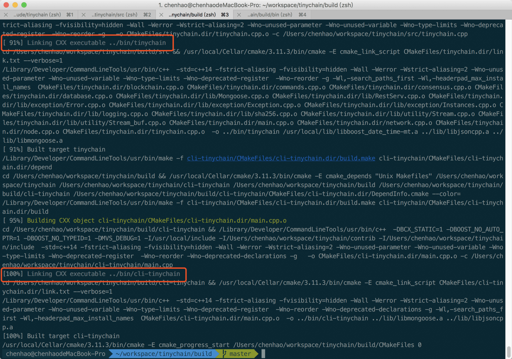
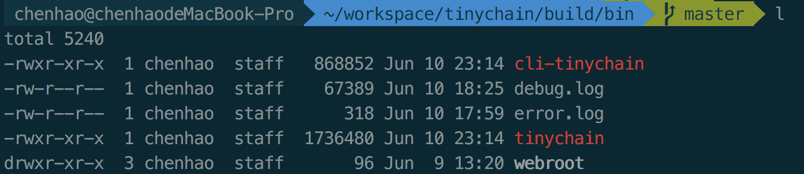
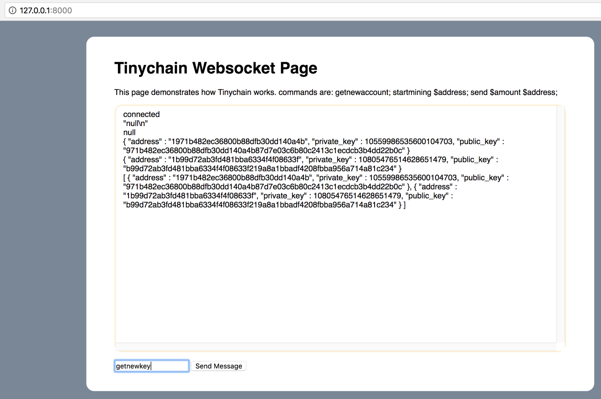
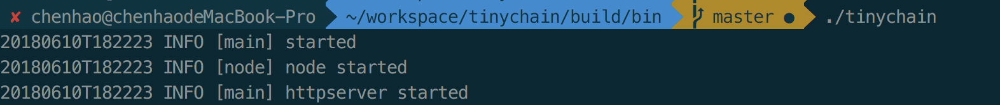
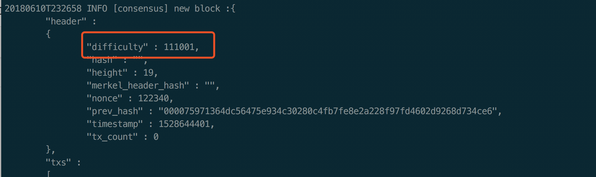
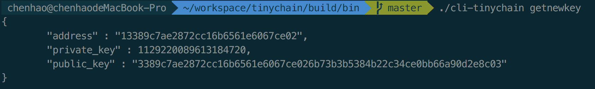
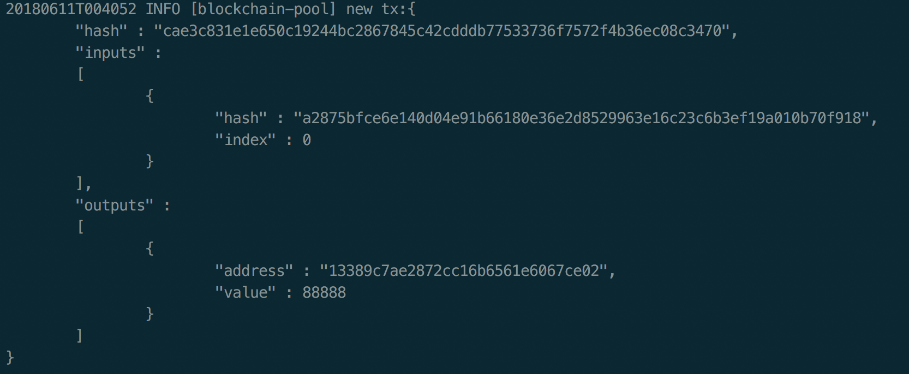
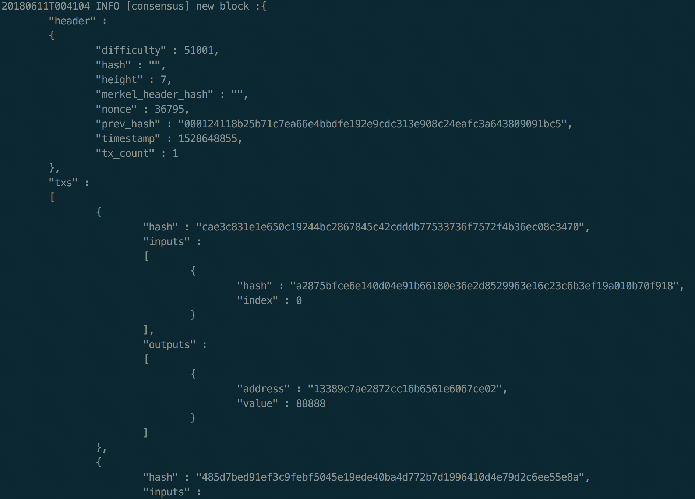

- 00 开篇词 帮你从0到1深入学习区块链技术.md.html
- 尾声篇 授人以鱼，不如授人以渔.md.html
- 新书首发《区块链第一课：深入浅出技术与应用》.md.html
- 第01讲 到底什么才是区块链？.md.html
- 第02讲 区块链到底是怎么运行的？.md.html
- 第03讲 浅说区块链共识机制.md.html
- 第04讲 区块链的应用类型.md.html
- 第05讲 如何理解数字货币？它与区块链又是什么样的关系？.md.html
- 第06讲 理解区块链之前，先上手体验一把数字货币.md.html
- 第07讲 区块链的常见误区.md.html
- 第08讲 最主流区块链项目有哪些？.md.html
- 第09讲 深入区块链技术（一）：技术基础.md.html
- 第10讲 深入区块链技术（二）：P2P网络.md.html
- 第11讲 深入区块链技术（三）：共识算法与分布式一致性算法.md.html
- 第12讲 深入区块链技术（四）：PoW共识.md.html
- 第13讲 深入区块链技术（五）：PoS共识机制.md.html
- 第14讲 深入区块链技术（六）：DPoS共识机制.md.html
- 第15讲 深入区块链技术（七）：哈希与加密算法.md.html
- 第16讲 深入区块链技术（八）： UTXO与普通账户模型.md.html
- 第17讲 去中心化与区块链交易性能.md.html
- 第18讲 智能合约与以太坊.md.html
- 第19讲 上手搭建一条自己的智能合约.md.html
- 第20讲 区块链项目详解：比特股BTS.md.html
- 第21讲 引人瞩目的区块链项目：EOS、IOTA、Cardano.md.html
- 第22讲 国内区块链项目技术一览.md.html
- 第23讲 联盟链和它的困境.md.html
- 第24讲 比特币专题（一）历史与货币.md.html
- 第25讲 比特币专题（二）：扩容之争、IFO与链上治理.md.html
- 第26讲 数字货币和数字资产.md.html
- 第27讲 弄懂数字货币交易平台（一）.md.html
- 第28讲 弄懂数字货币交易平台（二）.md.html
- 第29讲 互联网身份与区块链数字身份.md.html
- 第30讲 区块链即服务BaaS.md.html
- 第31讲 数字货币钱包服务.md.html
- 第32讲 区块链与供应链（一）.md.html
- 第33讲 区块链与供应链（二）.md.html
- 第34讲 从业区块链需要了解什么？.md.html
- 第35讲 搭建你的迷你区块链（设计篇 ）.md.html
- 第36讲 搭建你的迷你区块链（实践篇）.md.html
- 捐赠
第36讲 搭建你的迷你区块链（实践篇）
上一篇文章中，我们介绍了实现一个迷你区块链的大致思路。今天，我们将通过代码编写，以及简单的功能测试，来完成我们的迷你区块链Tinychain。
除了正常的测试案例之外，我们还可以构造一些极端测试案例，来观察Tinychain的分叉合并，挖矿难度调整等情况。
代码编写
通过前文的分析，我们已经了解到了实践一个迷你区块链的大致思路。接下来，我将从顶层到底层来搭建区块链。
代码编写1 Server
从链的顶层设计来看，我们需要一个入口，那么我们就从入口开始：我需要先为整个服务做一些基础设置，最后再来Server.run()。
所以，我们的代码大概是这样子的。
// server setup
node my_node;
mgbubble::RestServ Server{"webroot", my_node};
auto& conn = Server.bind("0.0.0.0:8000");
mg_set_protocol_http_websocket(&conn);
log::info("main")<<"httpserver started";
Server.run();
我们首先生成一个node实例，然后被Server装载进去，最后设置好Server启动。
这个Server主要有两个功用，第一是向本地用户服务，也就是接受命令行，接受本地RPC调用；第二是接受外部网络传送进来是的新交易，和新的区块。所以Server是整个节点的入口。
代码编写2 node
那么这里的node其实就是区块链的node，里面包含了区块链的基本设置，这些一般都是硬编码在代码中的，例如一般区块链都有个“魔法数”，实际上就是区块链ID，这个ID会被放在所有消息的开头，如果区块链ID不匹配，则抛弃接收到的消息。
这里的区块链ID我们设置在这里。
blockchain(uint16_t id = 3721):id_(id) {
id_ = id;
create_genesis_block();
}
代码中所展示的id_就是区块链ID，在Tinychain的案例中，我也是硬编码的。
在一个node当中，至少要包含network、blockchain、miner三个模块。
public:
void miner_run(address_t address);
blockchain& chain() { return blockchain_; }
network& p2p() { return network_; }
private:
network network_;
blockchain blockchain_;
miner miner_{blockchain_};
network也就是P2P网络类，blockchain是区块链的核心类，miner是共识模块下的核心类，三者被聚合到node中。
同时，node也会提供一些blockchain和miner的接口，方便Server层调用。
代码编写3 blockchain
一个blockchain实例，应当包含下面的内容。
uint16_t id_;
block genesis_block_;
chain_database chain_;
key_pair_database key_pair_database_;
memory_pool_t pool_;
genesisblock 就是创世区块，这个是预先生成好的。genesis_block的信息也是被硬编码在代码中，我在Tinychain的例子为了方便测试，每个genesis_block都是可以自行生成的。
chaindatabase chain 是相对于memory_pool而言的，chain_就是已经经过确认，并且在本地持久化存储的区块数据（由于时间有限，Tinychain的案例中还未实现持久化存储，可以后续升级替换）。
memory_pool 是指还未经过确认，暂时驻留在内存中的交易池，交易池中的交易会在挖矿时，被导入到新的区块中。
// 装载交易
new_block.setup(pool);
这里的pool就是交易池。
key_pair_database 是指专门存储用户的私钥的数据库，同时提供私钥管理。
同时blockchain也负责统一对外提供上述功能的接口。
// 获取当前节点高度
uint64_t height() { return chain_.height(); }
// 获取当前节点最新区块
block get_last_block();
// 查询指定区块
bool get_block(sha256_t block_hash, block& out);
// 查询指定交易
bool get_tx(sha256_t tx_hash, tx& out);
// 查询目标地址的余额
bool get_balance(address_t address, uint64_t balance);
// 获取当前区块链的ID
auto id() {return id_;}
// 获得交易池数据
memory_pool_t pool() { return pool_; }
// 区块打包成功以后，用于清空交易池
void pool_reset() { pool_.clear(); }
// 从网络中收集未确认的交易到交易池
void collect(tx& tx) {
pool_.push_back(tx);
}
void merge_replace(block_list_t& block_list)；
除了上述接口之外，blockchain还负责当发现自己处于较短的分叉链上时，自动合并到最长链。
代码编写4 network
在network中，可用的地址簿代表了可用的其他对等节点，至少是连接过成功一次的。
public:
void broadcast(const block& block);
void broadcast(const tx& transaction);
void process(event_t ev, func_t f);
private:
endpoint_book_t book_;
channels_t channels_;
地址簿会随着网络的变化进行更新，实时状态的地址簿是驻留在内存中的，当节点关闭是，会被刷到持久化存储中。
channels代表了已经激活的连接，这些连接可以被broadcast接口使用，当本地节点产生新的区块和交易时，会调起这些channels。
当P2P网络产生了新的事件时，会通过process接口处理新到达的交易和区块，这一事件会传导给blockchain模块。
代码编写5 consensus
consensus的含义为共识，共识会在两种情况下产生，第一是对本地生产的交易进行验证，第二是外来的区块和交易进行验证。
无论是哪种情况，他们遵循的验证规则是一样的。validate_tx和validate_block分别承担了这样的功能。
bool validate_tx(const tx& new_tx) ;
bool validate_block(const tx& new_block) ;
除了验证区块之外，还涉及到提供基础挖矿设施。我们知道挖矿分为两种，一种叫做solo挖矿，另外一种叫做联合挖矿。其实无论哪种挖矿类型，都必须用到miner类。
public:
//开始挖矿
void start(address_t& addr);
inline bool pow_once(block& new_block, address_t& addr);
// 填写自己奖励——coinbase
tx create_coinbase_tx(address_t& addr);
private:
blockchain& chain_;
miner类展示了在solo挖矿情况下，支持开始挖矿以及计算自己的coinbase的过程。
实际pow_once的挖矿代码如下，pow_once被start调用，start里面是一个死循环，死循环里面包了pow_once函数。
bool miner::pow_once(block& new_block, address_t& addr) {
auto&& pool = chain_.pool();
auto&& prev_block = chain_.get_last_block();
// 填充新块
new_block.header_.height = prev_block.header_.height + 1;
new_block.header_.prev_hash = prev_block.header_.hash;
new_block.header_.timestamp = get_now_timestamp();
new_block.header_.tx_count = pool.size();
// 难度调整:
// 控制每块速度，控制最快速度，大约10秒
uint64_t time_peroid = new_block.header_.timestamp - prev_block.header_.timestamp;
//log::info("consensus") << "target:" << ncan;
if (time_peroid <= 10u) {
new_block.header_.difficulty = prev_block.header_.difficulty + 9000;
} else {
new_block.header_.difficulty = prev_block.header_.difficulty - 3000;
}
// 计算挖矿目标值,最大值除以难度就目标值
uint64_t target = 0xffffffffffffffff / prev_block.header_.difficulty;
// 设置coinbase交易
auto&& tx = create_coinbase_tx(addr);
pool.push_back(tx);
// 装载交易
new_block.setup(pool);
// 计算目标值
for ( uint64_t n = 0; ; ++n) {
//尝试候选目标值
new_block.header_.nonce = n;
auto&& jv_block = new_block.to_json();
auto&& can = to_sha256(jv_block);
uint64_t ncan = std::stoull(can.substr(0, 16), 0, 16); //截断前16位，转换uint64 后进行比较
// 找到了
if (ncan < target) {
//log::info("consensus") << "target:" << ncan;
//log::info("consensus") << "hash :" << to_sha256(jv_block);
new_block.header_.hash = can;
log::info("consensus") << "new block :" << jv_block.toStyledString();
log::info("consensus") << "new block :" << can;
return true;
}
}
上面的代码从一开始到for循环之前，都可以提取出来，做成叫做getblocktemplate的接口，getblocktemplate是一种JSON-RPC调用。
通过这个调用，就可以把挖矿的状态信息分享给其他矿机，矿机拿到blocktemplate以后直接进行nonce部分暴力搜索即可。
代码编写6 database
database是偏底层的接口，主要的功能有两个，第一是提供区块和私钥的持久化存储，第二是提供交易和区块的查询接口。
上文blockchain中的blockchain_database和keypair_database都是从database派生过来的。
key_pair_database
// 相当于是本地钱包的私钥管理
class key_pair_database
{
public:
key_pair get_new_key_pair()；
const key_pair_database_t& list_keys() const；
private:
key_pair_database_t key_pair_database_;
};
blockchain_database
public:
uint64_t height();
auto get_last_block();
bool get_block (const sha256_t block_hash, block& b);
bool get_tx (const sha256_t tx_hash, tx& t);
bool push_block (const block& b);
bool pop_block (cconst sha256_t block_hash);
private:
chain_database_t chain_database_;
代码编写7 commands
commands提供了开发者命令行交互接口。
bool exec(Json::Value& out);
static const vargv_t commands_list;
private:
vargv_t vargv_;
node& node_;
首先得有一个可识别的命令列表，接着是执行接口，例如命令行发起生成新key_pair的过程，执行getnewkey命令。
先被command解析，接着执行exec，执行的时候需要用到node对象。
实际上command类比较繁琐，因为一个功能复杂的钱包，维护的命令和种类可能多达几十种。
同时命令又可以被JSON-RPC调用，所以一般命令行客户端本身就是一个轻量级的http-client。
std::string url{"127.0.0.1:8000/rpc"};
// HTTP request call commands
HttpReq req(url, 3000, reply_handler(my_impl));
代码编写8 基础类
基础类是实际生成公私钥对、构建交易tx的基本单元类，构建区块的基本单元类。
key_pair:
class key_pair
{
public:
key_pair() {
private_key_ = RSA::new_key();
public_key_ = private_key_.public_key();
}
address_t address()；
sha256_t public_key() const；
uint64_t private_key() const；
// ...一些序列化接口(tinychain中是Json)
private:
private_key_t private_key_;
public_key_t public_key_;
tx:
public:
input_t inputs() const { return inputs_; }
output_t outputs() const { return outputs_; }
sha256_t hash() const { return hash_; }
private:
input_t inputs_;
output_t outputs_;
sha256_t hash_;
block:
class block
{
public:
typedef std::vector<tx> tx_list_t;
struct blockheader {
uint64_t nonce{0};
uint64_t height{0};
uint64_t timestamp{0};
uint64_t tx_count{0};
uint64_t difficulty{0};
sha256_t hash;
sha256_t merkel_root_hash; //TODO
sha256_t prev_hash;
};
// ... 一些其他接口和序列化函数
std::string to_string() {
auto&& j = to_json();
return j.toStyledString();
}
sha256_t hash() const { return header_.hash; }
void setup(tx_list_t& txs) {tx_list_.swap(txs);}
private:
blockheader header_;
tx_list_t tx_list_;
首次运行
我们编写完基础类和基本结构的代码之后，就可以运行试一试。
编译成功是这样子的。

我们可以看到有Tinychain和Cli-tinychain。

Tnychain就是我们的核心程序，cli-tinychain就是我们的命令行客户端。
实际上我在Server里还嵌入了一个可视化的Websocket界面。

只需要在Tinychain可执行文件同目录底下创建webroot文件夹，将etc底下的index放入webroot下，接着打开浏览器127.0.0.1:8000就可以看到了。
实际上这个页面我想做成区块的监视页面，只是还没改造完成，目前支持发送命令。
我们开始首次运行Tinychain。

运行后，等node和server全部started，就可以开始操作命令行了。
也可以通过日志进行监视，但是需要在代码处详细打桩，这次我偷懒了，没有好好打，所以不多，直接查看同目录下debug.log和error.log即可。
首次挖矿
我们通过./tinychain启动之后，开始第一次挖矿。
✘ chenhao@chenhaodeMacBook-Pro ~/workspace/tinychain/build/bin master ./tinychain
20180610T232347 INFO [main] started
20180610T232347 INFO [node] node started
20180610T232347 INFO [main] httpserver started
20180610T232356 INFO [consensus] new block :{
"header" :
{
"difficulty" : 9001,
"hash" : "",
"height" : 1,
"merkel_header_hash" : "",
"nonce" : 0,
"prev_hash" : "00b586611d6f2580e1ea0773ec8b684dc4acf231710519e6272ed7d0c61ed43e",
"timestamp" : 1528644236,
"tx_count" : 0
},
"txs" :
[
{
"hash" : "cddf6e838eff470d81155cb4c26fd3a7615b94a00e82f99b1fd9f583d7bc0659",
"inputs" :
[
{
"hash" : "00000000000000000000000000000000",
"index" : 0
}
],
"outputs" :
[
{
"address" : "122b03d11a622ac3384904948c4d808",
"value" : 1000
}
]
}
]
}
20180610T232356 INFO [consensus] new block :0de5c36420aab2f7fc9413cfbd21bece697a349106771dc58b25a6a099d6aa86
20180610T232357 INFO [consensus] new block :{
"header" :
{
"difficulty" : 18001,
"hash" : "",
"height" : 2,
"merkel_header_hash" : "",
"nonce" : 6048,
"prev_hash" : "0de5c36420aab2f7fc9413cfbd21bece697a349106771dc58b25a6a099d6aa86",
"timestamp" : 1528644236,
"tx_count" : 0
},
"txs" :
[
{
"hash" : "cddf6e838eff470d81155cb4c26fd3a7615b94a00e82f99b1fd9f583d7bc0659",
"inputs" :
[
{
"hash" : "00000000000000000000000000000000",
"index" : 0
}
],
"outputs" :
[
{
"address" : "122b03d11a622ac3384904948c4d808",
"value" : 1000
}
]
}
]
}
刚开始挖矿会比较快，随着难度提升，会趋向于稳定到10秒种左右一个块，如果长时间不出块，难度会自动降下来。曾经元界的代码在难度调整上有缺陷，遭受了严重的“难度坠落”攻击。
我们可以通过这个位置观察难度调整的情况。 
第一笔交易
我们保持挖矿，接下来发送一笔交易。 我们先通过getnewkey命令获得一个新公私钥对以及对应的地址。

接着发送第一笔交易。

探测到接下来被打包到区块中。

分叉与合并
区块链分叉是数据全网不一致的表现，通常是矿工节点行为不一致导致的，常见的有网络分区和协议不兼容，如果同时产生，那么必然会出现两条比较长的分叉链。
在现实情况中，分叉1个是最常见的，2个已经非常罕见了，3个以上基本是网络分区造成的。
如果我们要在Tinychain中实践网络分区和分叉，我们需要构建局域网多节点私链环境，可以通过docker来试验。
通过本文，你可以看到即使是搭建一个迷你区块链，它的工作量也是巨大的，其中不仅仅只是组合几个基础组件那么简单，还要涉及各个模块的设计和交互等详细的工作。
由于在短时间内全部搭建以及实现Tinychain所有功能是不可行的，在这里，我只为你提供了一些实践的思路。
目前Tinychain缺失了P2P网络实现、RSA公私钥对集成、共识模块的交易和区块的验证等内容，我会在后续逐渐完善，你也可以跟我一起补充。
总结
好了，通过今天的代码实践，我们实现了迷你区块链Tinychain，并且，通过运行与测试Tinychain，我们了解到了一个最简单区块链的运行原理，希望通过今天的文章，可以帮你加深对区块链技术的理解。
区块链技术只是作为基础设施，服务于广大的开发者和业务需求。目前区块链的发展远远不止Tinychain中所展现的样子，我们还需要去考虑区块链2.0智能合约，如何设计Token经济等一些问题。
随着区块链的发展和应用规模，区块链安全问题也日益突出，所以今天的问题是，如果要攻击Tinychain，可以采取什么手段呢？你可以给我留言，我们一起讨论。
感谢你的收听，我们下次再见。
© 2019 - 2023 Liangliang Lee. Powered by gin and hexo-theme-book.